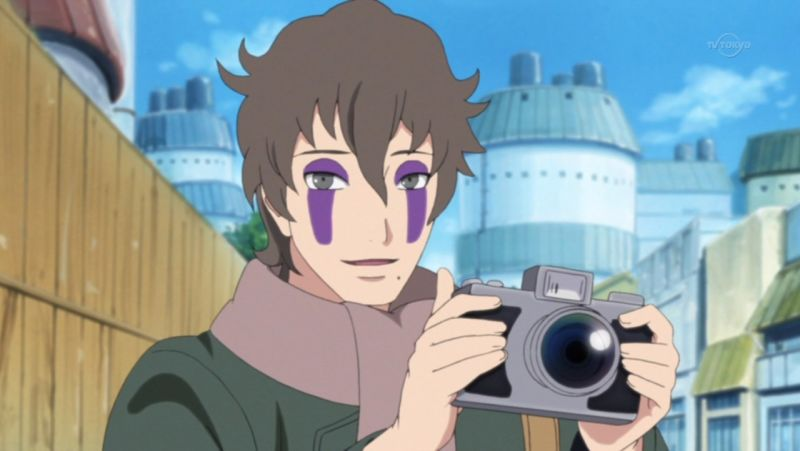

Fotógrafo Nas Horas Vagas
Quando tenho tempo livre costumo me aventurar pela cidade a procura de belas paisagens. Também tiro a máscara e altero minha voz para que eu não seja reconhecido
Experiência
Durante minha jornada de trabalho, experienciei diversas missões. Desde pequenos faço parte da Elite dos Ninjas ANBU e aprendi a copiar milhares de Justsus com meu sharingan.

Após sair da ANBU para assumir o cargo de Líder do Time 7, eu treinei Naruto, Sasuke e Sakura para que se fossem capazes de quebrar as regras para que não abandonem uns aos outros. Durante o preimeiro treino também ensinei ao Naruto

Projetos
Ninja que copia: Consigo copiar, lembrar e conjurar qualquer Jutsu que eu já tenha visto com meu sharingan.
Interesses
- Ler livros do Jiraya
- Aprimorar técnicas dos Jutsu Chidori e Rasengan.
- Sempre atrasar ao máximo possível nas missões do Time 7
- Invocar Cachorros.
Contato
Procurar por Hiruzen Sarutobi